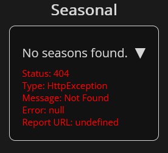

Something I found to be frustrating was that using the innerHTML property of an elment was not good to use since it basically cleared the events of anything in it. This was confusing to figure out since it was not immediatly obvous of what was causing the buttons I was adding events to to have their onclick events become null. Not even AI knew what was going wrong so I figured it out on my own since its advice was not very helpful.
Something I found frustrating and a bit harder to read was making elements with attributes.
It was quick and easy with innerHTML, but I avoided that because of the loss of data described
above. When adding attributes using the element variable, is meant
I would have to define it, then set each attribute individually with its own code statement.
I wanted a way to create an element with a single code statement that could not lose any data in the process.
So, I made a function that took in everything. It basically uses the bracket syntax to set properties based
on the object you provide which would be key-value pairs of the attributes to set. You can even set the inner
text using that object so it makes creating elements much more concise, easier to read, and quicker to write.
It even works with adding classes, datasets, and non-standard attributes.
This image shows everything working as intended allowing for all the major things to be created for an element with only a single code statement.
I noticed that sometimes there was data from the api that was null such as alternate titles. A normal person would probably just make an if statement for the thing that could be null and call it a day, but I decided I wanted to make an easy way to do this in one line that worked for any element rather than hard coding it every time. In that vain, I made a function called `tryAppend` which will create an element and append it to a parent element only if the specified data is present. If any of the included data is invalid, it will not create or append the element at all. This way, the HTML doesn't have any tags that are empty shells or contain the word "null" meaning it is more semantic and clean.
I created a foldable mechanism that allowed for sections to be folded and unfolded. For styling, I basically created a finite state machine accros both css and javascript and I think it turned out pretty well. Something to note is that it is not hard coded, it supports any number of foldable sections, works with nested foldable sections, and can allow for multiple foldables to be open at once (even though I limited it to only have one unfolded at a time since I think it makes it easier for the user to understand that the filters and sorting won't work on the "Lists" section).
I commented most code that is not self explainitory along with type specifying function headers. This makes it easier for me and others looking at the code to understand what is going on. By having the types specified, it also helps intellisense work better which improves quality of life when coding. I also made many functions that reduced repeated code but also made it easier to extend and add new features since many have similar functionality. Additionally for organization purposes, I added regions to the code.
I made a robust error catching and reporting system allowing the errors to display to the user with all relavent details. This may be confusing to the user though which makes me question if I should have even done this.
So after writing that, I decided to utilize the foldable system I made to make the error more user friendly. Now it only shows the details when clicking on it! If you want to see an error yourself, spam click on one of the seasonal anime or spam 'enter' in the main search bar. This will cause an error from jikan since it doesn't allow too many requests at once.
Rather than store the last search term only, I decided to implement a history bar that pops up below the search bar when focused. The reason I chose not to save the term in the search box is because I felt that it makes it more of a burden to the user to have to intentionally clear the box to search something new. The search history has the most recent at the top so it is quite close to the mouse meaning it would be pretty easy to re-search that if they want to, so it is giving the user more agency over what happens.
Load too many reuslts in error Make a loop to try until not that error Promises Refactor everything to work with Promises Now spamming works but you can have parallel loops happening